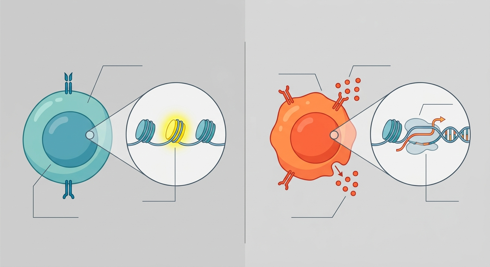

The Molecular Doorstop: How a Single Histone Variant Keeps the Aging Immune System on High Alert

Imagine an elite special forces soldier asleep in a barracks. To survive the night, they must sleep deeply to conserve energy. Yet, if an alarm sounds, they must be fully armed, alert, and sprinting toward the perimeter in a fraction of a second. This is the daily paradox faced by our immune system’s naïve CD8+ T cells. They must remain perfectly quiet—or quiescent—to avoid triggering destructive autoimmune storms, yet they must be poised to launch a massive defense the moment a new pathogen or cancer cell appears. For decades, immunologists have wondered how these cells manage to stay so quiet while keeping their engines revving in the background. Now, writing in Science Advances, researchers have discovered the molecular "doorstop" that makes this tightrope walk possible: a histone variant known as H2A.Z.
Chromatin is the tightly wound spool of DNA and proteins inside our cells. To keep a cell quiet, chromatin is usually packed shut like a closed book. To wake the cell up, it must be uncoiled so genes can be read. The researchers discovered that naïve CD8+ T cells undergo a process they call "epigenetic training," orchestrated by H2A.Z. Rather than keeping the immune-response genes completely locked away or wide open, H2A.Z binds to critical promoter regions of DNA, acting as a physical doorstop. It keeps the chromatin slightly cracked open—or "poised"—without actually turning the genes on. This elegant mechanism allows the quiescent cell to rest undisturbed while retaining the ability to instantly draft its battle plans when an invader is detected.
This discovery has profound implications for the field of longevity and regenerative medicine, specifically in combatting immunosenescence—the gradual decline of the immune system as we age. As we grow older, our reservoir of naïve T cells shrinks, and the remaining cells lose this exquisite poise. They become sluggish, unable to respond quickly to novel threats like emerging viral strains or mutating cancer cells, which explains why vaccines are less effective in the elderly. By identifying H2A.Z as the master coordinator of this epigenetic readiness, scientists now have a concrete molecular target. If we can therapeutically manipulate or preserve this H2A.Z-mediated training program, we might be able to "re-train" aging T cells, effectively restoring their youthful vigilance and resilience.
However, translating this elegant molecular choreography from the lab bench to clinical therapy is fraught with challenges. Epigenetic modifications are notoriously double-edged swords; chromatin remodeling is a global process, and H2A.Z is active in many cell types beyond T cells. Artificially tweaking H2A.Z expression risks disrupting genomic stability elsewhere, potentially triggering oncogenic pathways—indeed, H2A.Z overexpression is already linked to several aggressive cancers. Furthermore, because this study relies heavily on tightly controlled mouse models and in vitro cellular assays, we cannot yet be certain that human naïve T cells, which must survive for decades rather than the brief lifespan of a rodent, rely on the exact same temporal dynamics. Safely delivering a highly targeted epigenetic rejuvenator to human T cells without causing off-target chaos remains a distant, albeit incredibly exciting, frontier.
Sources & Citations:
Primary Source: Epigenetic training licenses naïve CD8 (Science advances)
- Primary Study: "Epigenetic training licenses naïve CD8+ T cells." Science Advances. https://doi.org/10.1126/sciadv.aee8251